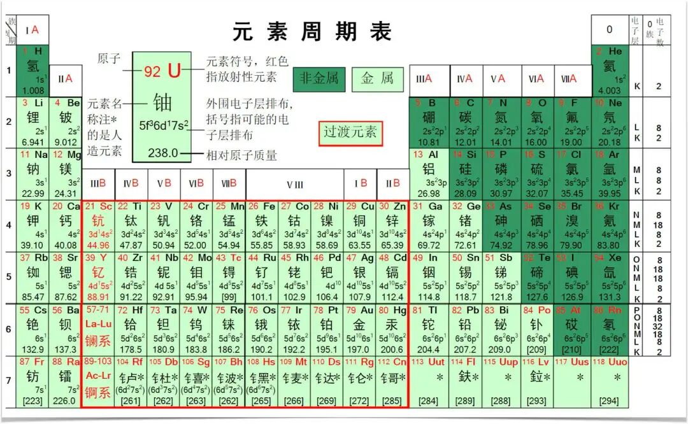
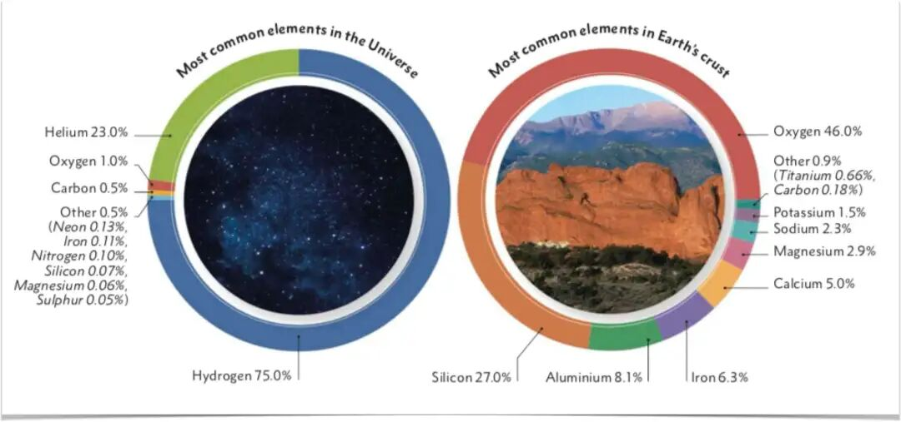
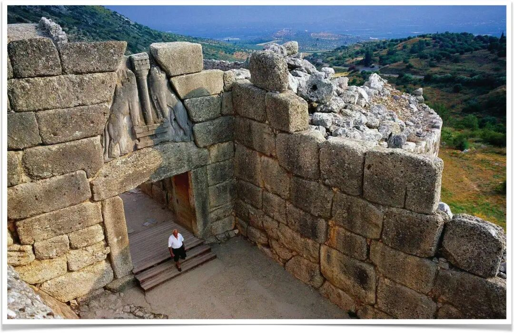

金属的社会属性意味着人类的历史泛着金融的光泽与脉络，冷铁或许是“万物之王”，但正是铜，率先锻造了文明的锁链。
“献给女主人，银子归于侍女，铜归于精于生意的匠人。‘好！’男爵在大厅中说，‘但铁，冷铁，乃金属之王。’”
——鲁德亚德·吉卜林，《冷铁》（1907）
在1907年诺贝尔文学奖得主鲁德亚德·吉卜林的诗歌作品《冷铁》中，人的身份在与金属的交互中锵锵作响，其冷峻的笔触传递出金属的社会意蕴。金与银象征财富与荣耀，却脆弱易逝；铜是匠人之金属，连接技艺与商贸；而铁——冷酷无情的铁——以暴力与统治之力，凌驾于一切之上。乔治·奥威尔评吉卜林时称其“诚实得近乎残酷”，《冷铁》直面权力本质，从军事独裁到殖民扩张，无不赤裸呈现。
占据元素周期表大部分篇幅，倾向于丧失电子形成阳离子的金属家族，真的隐藏着社会阶级嵯峨的秘密吗？
在人类的工具开发史上，金属排在硅（石器）之后，大约在公元前9000年开始进入第一批农耕人的精神生活，支撑起人们对于造物神奇的信仰。其作为工具使用则要到公元前5000前后，阿纳托利亚地区（今土耳其）和伊朗的札格罗斯山区的先民才初步掌握了铜矿石的冶炼技术，金属作为工具，并主宰人类生存命题的时代才正式来临。如果你理解了吉卜林的诗歌，那么你一定相信金属有着超脱其自然属性的感性力量，它们从来不是中性的自然产物，而是承载着权力结构、技术发展和社会组织的深远奥义。
非洲为何贫穷至今？
非洲，智人的发源地，虽然这里曾孕育出了最初的高等智慧，但是不可否认的是，这片“暗黑大陆”却长期陷入经济、政治甚至人道主义的困顿。野蛮殖民、奴隶贸易、种族屠戮，这些人类发展史上的噩梦多是与这片土地关联。赢在起跑线上，却倒在终点之前的发展悖论引人深思：为何这片资源丰富的土地未能孕育出强大的集权国家？长期的殖民和奴隶贸易、资源掠夺、非自主的国际分工角色固然可以在一定程度上解释非洲之殇，但是，这些表象化因素均流于腠理，难以提供深入骨髓的解释。
“‘五行’缺铜”，难道也是他们贫穷落后的原因吗？
索马里地处非洲之角，扼守红海与印度洋的贸易咽喉，地理位置得天独厚。古代，索马里沿海的港口城市如摩加迪沙和泽拉是“海上丝绸之路”的重要节点，与阿拉伯、印度乃至中国保持着繁荣的贸易。
然而，现代索马里却以海盗的形式将这一地理出了与其地理地位极不相称的经济状况。世界银行2023年的统计显示，索马里人均GDP约为500美元，是地球上最为贫困的国家之一。约70%人口生活在国际贫困线（1.90美元/天）以下，部分农村地区甚至超过80%。
图1 索马里为何没有建立起有效的集权？
索马里从未形成统一的集权国家。其社会结构以宗族为核心，分为六个主要宗族——迪尔、达罗德、以萨克、哈维耶、狄吉尔和拉罕韦恩——皆追溯至传说中的共同祖先萨马利。北部宗族以游牧为主，逐水草而居，驱赶羊群、骆驼与牛；南部宗族则以农耕为生，种植高粱、玉米和香蕉。宗族内部进一步细分次级族群，最紧密的是“迪亚”群体——基于血缘的亲族单位，共同承担“血钱”（因亲人被杀而支付的赔偿金）或接受赔偿。这种基于血缘的分散结构，强化了地方自主性，却抗拒了集权所需的等级体系。
索马里的去中心化并非孤例，而是撒哈拉以南非洲的普遍特征。历史学家约翰·伊利夫在《非洲史》中指出，非洲社会的政治组织多以亲族为基础，缺乏形成大型国家的制度性框架。与美索不达米亚或中国不同，非洲少有基于税收、官僚体系或常备军的集权政体。新晋诺贝尔经济学奖得主阿西莫格鲁和罗宾逊在其巨著《国家为什么会失败》一书中，将经济成功的原因归功于包容性的经济制度，索马里的社会结构具有广泛的多元性，但是这不足以让他建构起包容性的制度，二者之间存在的一个关键的差异就是——政治集权。这关键一环的缺失使得民主并没有进化成包容，反而造成了持续不断的争斗和混乱。
这种分散性是否与某种冶金技术的缺位密切相关？
尽管以刚果、赞比亚、纳米比亚为代表中南部非洲国家拥有世界上最大的铜矿储量，但是撒哈拉以南非洲国家大多绕过了青铜时代，从石器时代直接进入到了铁器时代。在离非洲不远的小亚细亚以及中东及地区，铜催生出了早期城市文明，但在非洲许多地区却未被充分利用。铜的冶炼需要稳定的高温（约1085°C，或与锡合金成青铜后降至800°C），以及集中化的资源管理。美索不达米亚、埃及和印度河流域的青铜时代社会依赖铜的稀缺性和垄断性，孕育了城市中心、专业分工和政治精英。非洲则不同，其丰富的铁矿资源使铁器时代提前到来，但缺乏青铜时代的过渡，导致社会未能形成类似的城市化与集权化进程。
目光重回索马里，其游牧经济依赖牲畜而非定居农业，流动性强，难以形成稳定的城市中心。发展历史上铜的稀缺进一步限制了工具与武器的专业化生产，阻碍了精英阶层对资源的垄断。相比之下，埃及的法老通过控制铜矿与青铜武器，建立了强大的中央集权国家。非洲的去中心化结构虽在特定环境中具有韧性，却在面对外部压力（如殖民入侵）时显得脆弱。这种“‘五行’缺铜”的历史轨迹，为非洲的长期贫困埋下了伏笔。
发展履历中铜时代的缺失造成了非洲社会群体的碎片化模式，而独特的生态因素进一步加剧了这种状况。撒哈拉以南非洲的地理环境多样，从热带雨林到干旱草原，限制了农业剩余的积累。历史学家杰弗里·赫伯斯特在《非洲的国家与权力》中坦言，非洲的土地丰饶但人口密度低，权力难以集中。游牧文化的盛行进一步强化了这一特征，宗族间的竞争与流动性阻碍了领土型国家的形成。此外，非洲的疾病环境（如疟疾和黄热病）限制了人口聚集，削弱了城市化的基础。
非洲的贫困与去中心化并非是资源的缺失，而是冶金技术、文化传统与生态条件的交叉感染的结果。铜的缺位，使非洲未能经历青铜时代的政治与经济整合，为其经济历史轨迹设定了独特且悲凉的驿站。
为何人类率先开发铜？
公元前7500年期前，当第一批定居在底格里斯河上游恰约尼地区的农耕人从地表捡起一块自然单质铜块时，人类使用金属的历史也就此开启。在元素周期表中的118中元素中，金属种类高达94种，因为先民没有金属的概念，因此也不必遭受选择困难症的侵扰，他们之所以留意到这种物质，完全是出于对硬度和可塑性的追求。人类的金属之旅始于铜，而非铁、铝或其他金属。这一选择并非偶然，而是由化学、地质与社会需求共同决定的。铜的特殊物理属性不但塑造了刀（切削工具，伊朗锡亚尔克遗址）、矛（武器，乌尔王陵出土）和镰（农具，中国二里头文化）等称手的用具，也塑造了人类早期复杂的社会形态。

图2 元素周期表里的金属
可塑形的需求意味着首先要软化这些物质，这需要熔点的配合。经济史学家亚历山德罗·吉劳多在《金属与货币》一文中说，产生高温的能力曾经是，现在仍然是衡量一种文明所处科技发展阶段的标准之一。铜的熔点为1085°C，与锡合金成青铜后降至约800°C，适合早期炉窑的冶炼技术。人类用火的历史可以最追溯的100万年前，但是篝火的温度最高也仅仅只有900°C，这里铜的熔点还相距甚远。通过改进燃烧的方式，到公元前4000-5000年，在中东地区经过特殊设计的炉窑里，人类可以将温度提升至1100°C，这足以冶炼铜而非铁（铁的熔点高达1538°C）。铜的延展性使其易于塑形，可制成工具、武器与装饰品；其耐腐蚀性确保了制品的持久性。相比之下，金银虽无需冶炼，但过于柔软，难以用于实用器具；铁则因冶炼难度高，直到公元前1500年左右才被广泛利用。
与铁和铝等金属相比，铜在地壳中的含量仅0.01%，分布集中，常以硫化物或氧化物形式存在于矿脉中。这种稀缺性与集中性使铜易于被精英阶层控制，从而形成经济与政治垄断。铜在进入人类工具箱的同时，也悄无声息地开始塑造人类的社会运作模式。铜的稀缺性与冶炼难度意味着人们不会平等地占有它，这催生了社会分化。在农业时代的早期，那些幸运地选择在拥有铜矿储藏地定居的人们率先站上了技术的制高点，但是铜的社会属性并不意味着人人都能从这种稀有金属中获益。

图3 铜在地壳中的含量约为0.01%
铜矿的开采与加工需要大量劳动力和专业知识，促使了劳动分工的出现。冶金工匠、矿工与贸易商成为新兴职业，推动了城市化的萌芽。铜制工具提高了农业生产力，如铜犁和镰刀使灌溉农业更高效，产生了更多的粮食剩余。这些剩余养活了非农业人口，包括官僚、祭司与士兵，为集权国家的形成奠定了基础。铜的贸易网络进一步加速了社会复杂化。公元前3000年左右，美索不达米亚的乌鲁克与埃及的奈伽达通过铜贸易与邻近地区建立了联系。
铜不仅是一种实用金属，还成为财富与权力的象征。青铜武器，如短剑与矛头，增强了军事能力，使精英阶层得以通过暴力维持统治。铜的这些特性，使其成为青铜时代（约公元前3300年起）社会转型的基石，人类进入一个前所未有的复杂社会。在美索不达米亚，苏美尔人的城市国家如乌尔和乌鲁克依赖铜器与青铜武器，建立了灌溉系统与防御工事。埃及的法老通过控制西奈半岛的铜矿，支撑了金字塔的建造与军队的扩张。印度河流域的哈拉帕文明利用铜制工具与青铜饰品，发展了标准化的度量衡与城市规划。
尽管这些古代文明在地理上相距甚远，但是不妨碍他们拥有共同的社会特征——铜的垄断促成了资源集中，将那些真正的幸运儿打造成脱离体力劳动的有闲阶级，并进而催生了官僚体系、税收制度与常备军。
铜不仅统治了人们的双手，也统治了人类的大脑，支起了人类文明的最早形态。
没有铜，便没有金字塔
20世纪法国考古学家让-菲利普·劳尔（Jean-Philippe Lauer）在对吉萨金字塔的长期挖掘和研究之后，发出了“没有铜，便没有金字塔”的慨叹，其意味之深远，远不止对金字塔建造技术的白描以及修辞上的美感，而是对青铜时代社会逻辑的精准概括。
因为地理上的封闭性，埃及的青铜时代历经2000多年，漫长且安宁。从第四王朝的吉萨金字塔（公元前2630年）到新王国时期的底比斯神庙，从图坦卡蒙的黄金面具到塞提一世墓的精美壁画，无不彰显着法老至高无上的权威。铜凿、铜锯与铜钻使工人能够切割坚硬的花岗岩与石灰石，完成规模空前的建筑工程。这些工具的制造需要集中化的铜矿开采与冶炼体系。西奈半岛的铜矿，如蒂姆纳矿区，为埃及提供了稳定的铜资源。法老通过控制这些矿区，不仅获得了经济收益，还强化了政治权威。
除此以外，铜器还推动了埃及的军事化。青铜矛、短剑与战斧装备了法老的军队，使其能够征服邻近地区，扩大疆域至目力所及。铜的稀缺性确保了这些武器的生产掌握在精英手中，防止了权力扩散。埃及的集权模式——神权政治、官僚体系与强制劳动——依赖铜的垄断性得以维系。
在埃及人忙于建造金字塔的同时，中国也正在漫长的青铜时代穿行。商周时期的青铜器，如鼎、簋与爵，不仅是实用器具，更是政治与宗教的象征。考古学家杰西卡·罗森将中国的青铜时代定义为"青铜礼器时代"，因为青铜鼎的形制与铭文反映了统治者的合法性。“问鼎”一词，源于诸侯询问天子鼎的数量与位置，意指挑战或确认统治权。周朝的礼制明确规定了青铜器的等级：天子九鼎，诸侯七鼎，大夫五鼎，士三鼎或一鼎。这种制度将金属与权力直接挂钩，青铜成为统治秩序的物质体现。
青铜器的铸造需要复杂的冶炼与模具技术，集中了大量资源与人力。商代晚期的都城安阳发现了大规模的青铜铸造作坊，表明青铜生产已高度专业化。秦武王因试图举鼎而丧命的轶事，进一步凸显了青铜器作为权力象征的致命分量。中国的青铜时代不仅推动了技术进步，还通过礼器制度巩固了政治等级。
地中海的早期文明同样建立在铜基之上。希腊的青铜由爱琴海地区的三大文明支撑，延续2100年（约前3200—前1100年）。铜的贸易与工艺催生了米诺斯文明（公元前2850-1450年）。如今克里特岛的克诺索斯宫殿遗址虽然在岁月的磨洗下坍塌为残垣，但巨大的廊柱遗存足以让我们窥见其繁盛之时复杂的官僚体系与遍布地中海沿岸的贸易网络。基克拉泽斯文明（公元前3300-2000年）利用铜制工具与青铜饰品，建立了繁荣的岛屿经济。迈锡尼文明（公元前1600-1100年）则以青铜武器与盔甲为核心，建造了迈锡尼以及梯林斯防御森严的城堡，使得阿伽门侬得以号令四方，吹响进军特洛伊的号角。

图4 克里特岛上的米诺斯文明遗迹
尽管青铜时代三大文明地理上相互阻隔，但是不妨碍他们经历似曾相识的大国捭阖，泛着青绿钝色的青铜器为这种遥相呼应提供了绝佳的注解。铜的稀缺性与冶炼难度要求集中化的资源管理，催生了官僚体系与精英阶层。铜制工具提高了生产力，青铜武器强化了军事力量，铜贸易拓展了经济网络。这些因素共同促成了城市化、等级化与国家化。
在此，我们不妨把劳尔的结论做一个扩展：没有铜的支撑，埃及的金字塔、中国的鼎与克里特的宫殿都将无从谈起。
从青铜时代到铁器时代
如果说铜铸就了国家，铁则颠覆了它们。约公元前1500年左右，铁器时代姗姗而来，它标志着一场冶金技术的革命，也是社会形态大转型的先声。
如果说铜意味着集权，则铁则代表了民主。铁在地壳中占5%，远比铜普遍。铁矿的广泛分布降低了冶炼的垄断性，使工具与武器的生产不再局限于精英阶层。铁的冶炼虽需更高温度（1538°C），但通过渗碳技术（将铁加热至900-1000°C与碳结合）可制成钢，兼具硬度与韧性。考古学家戈登·柴尔德指出：“廉价的铁使农业、工业和战争民主化。”铁制犁、斧与镰提高了农业生产力，铁制剑、矛与盔甲武装了更广泛的人群，削弱了青铜时代精英的军事优势。
赫梯帝国率先掌握了冶铁的技术，严格的保密措施地让他们独占这项技能长达200多年，也帮助其征服邻近的广大地区。到公元前1200年，铁器技术扩散至地中海东部，引发了“青铜时代崩溃”。迈锡尼文明、赫梯帝国与埃及新王国相继衰落，部分原因是铁器武装的“海上民族”颠覆了青铜武器的优势。铁的普及使战争不再是贵族的专利，社会权力结构随之重塑。
铁器的传播带来一个崭新的时代的同时，也为非洲带来了发展的悖论。在撒哈拉以南非洲，铁器时代约于公元前1000年独立兴起，尼日利亚的诺克文化与东非的班图族群掌握了铁冶炼技术，生产出铁制农具与武器。他们绕过了青铜时代，直接实现了从新石器时代的跃升，然而这条发展上的捷径事实上引发了社会形态的灾难。非洲的铁器时代虽带来了技术进步，却因缺乏青铜时代的过渡，未能催生复杂的国家体系。
与铜的集中分布不同，铁矿随处可见，任何社群都可冶炼铁器，精英难以垄断生产。铁的“民主”特性赋予了地方自主性，却分散了权力。以东非的班图族群为例，其铁制工具提高了农业生产力，促进了人口迁移，但部落结构依然占主导地位。西非的加纳帝国（公元4-13世纪）虽因铁器与黄金贸易而兴盛，但其政治组织仍以地方酋长为基础，未能形成持久的集权国家。索马里等地的游牧与农耕社群采用铁器，却未形成青铜时代那样的城市或政治整合。
在欧亚大陆，铁器时代在完成对青铜工具迭代的同时，在强大集权国家的废墟上催生出完全不同的社会效果。亚述帝国（公元前911-609年）利用铁制武器与攻城器械，建立了空前庞大的帝国。中国的周朝（公元前1046-256年）通过铁制农具提高了农业产量，支撑了人口增长与城市扩张。铁的普及使农业剩余增加，养活了更多的官僚与士兵，强化了集权体系。然而，铁的“民主化”也带来了前所未见得挑战：铁制武器的扩散使地方势力更难控制，以战国七雄为代表的诸侯在铁质矛戈的加持下群起，瓦解中央政权的同时也建立起更加分散化的政权网络，在历经百年的混战中寻找新的力量均势。
铁器时代的到来重塑了社会结构，它的丰裕性打破了青铜时代的垄断，拓展了人类生产力的前沿面，也扩大了军事参与度，但在不同地区产生了截然不同的结果。在欧亚，铁强化了集权国家；在非洲，铁的普及却因缺乏青铜时代的基础而导致政治碎片化。铁的双刃剑效应，凸显了金属的社会属性如何因地域与历史语境而异。
结语
吉卜林的《冷铁》何以不朽，是因为它道出了金属不仅是物质，更是社会命运的塑造者的冰冷事实。铜以其稀缺性与化学性态的特殊性，催生了青铜时代的城市化与集权国家，从埃及的金字塔到中国的鼎。而铁的普遍性打破了这些垄断，民主化了权力，却在非洲等地因缺乏青铜时代的基础而导致政治碎片化。撒哈拉以南非洲未经历青铜时代，铁器时代的过早来临留下了去中心化的遗产，在索马里等地延续至今。
金属的社会属性意味着人类的历史泛着金融的光泽与脉络，冷铁或许是“万物之王”，但正是铜，率先锻造了文明的锁链。